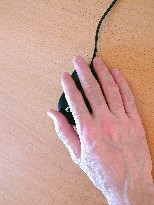
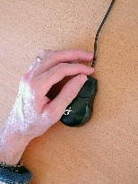
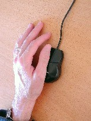
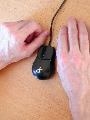
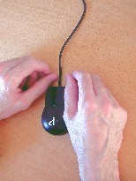

|
Input devices: a usage-driven approach
|
I doubt they were built for hand
safety: mice inherently strain the hand...
Pascarelli & Quilter in
Repetitive stress injury
|
The mouse is a spoiler. Whenever you put your hand on it,
you stress your body. If for a moment you forget to apply a
lifting force to your fingers, then buttons are immediately
activated. Consequently, your body must work constantly with
shoulder, limb, hand, and finger positions to not press
buttons. Unless, of course, you take your hand away from
the device. Something the size and shape of it discourage
you from doing. The lighter the mouse buttons are to
depress, and the bigger they are, the more static force is
needed to prevent accidental mouse clicks. Thus, curiously,
there may be a direct relationship between how "ergonomic"
the mouse is and how harmful it is.
The keyboard is much more forgiving in this regard. It is
natural to rest the hands in front of the keyboard as soon
as they are not in use. But given that the mouse inherently
forces an unnatural, constant muscle response, I believe
that researching mouse curvatures alone is an exercise in
futility.
The buttonless mouse
Instead, mouse buttons must be entirely removed from the
pointing device itself. This is not a radical idea: on
laptops, the pointing device (stick or pad) is separated
from the buttons. Also, the new mouse feature called a
scroll-wheel should be moved to the keyboard. The mouse is
the last place another function should be placed. Finally,
the proper mouse size is less than the standard one.
Now what are the consequences? The series of pictures
below illustrate five of numerous ways a small, buttonless
mouse can be manipulated. (The mouse shown has actually its
buttons disabled.) Most of these poses are not possible with
a conventional mouse unless various fingers are
counter-balanced to not depress the buttons.

One-handed finger ride
|

One-handed side grasp
|

One-handed thumb ride
|

Two-handed shove
|

Two-hands semi-ride
|
These pictures indicate how an appropriate shape allows the
the mouse to be manipulated by just putting a part of the hand
on top of it, while the side of the hand still rests on the
table. This easy-on-off principle encourages the hand to rest
on the desk, not on top of the mouse. It is still possible to
have the hand ride on top of the mouse—while the hand gets
gets a lot of support both from the desk, because the mouse
fits in the palm of the hand, and from the mouse itself,
because of the lack of buttons. Note that to use the mouse in
such varied ways, where hands are given plenty of resting
areas, more space is needed than what is usually available on
a keyboard tray. That's why I believe that reducing keyboard
size, or getting rid of it by combining speech recognition and
foot pedals, is very important.
And where do the buttons
go?
The buttons may go on either side of the keyboard or be foot
activated. In keyboard, I propose
how scrolling functionality and mouse buttons can be
conveniently combined on a keyboard. This arrangement will
not slow you down: as one hand is leaving the keyboard to
locate the mouse, the other slides to the side where the
buttons are easily found. And, in foot pedals I
consider available and future foot switches.
Trials
I believe that it would be interest to carry out controlled
trials of simplified, buttonless mouse designs. If the
design of the mouse impacts its injury potential, then a
study is more likely to demonstrate this effect the larger
it is. The removal of buttons may offer the best chance for
obtaining such an effect.
|
 printer-friendly version
printer-friendly version e-mail Klarlund
e-mail Klarlund Nils
Klarlund home
Nils
Klarlund home